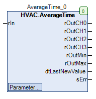

AverageTime (FB)¶
FUNCTION_BLOCK AverageTime
Kurzbeschreibung¶
Durchschnittswertbildung eines Analogwertes über vier verschiedene ZeiträumeMittelwertbildung: Arithmetischer MittelwertTypische Anwendung: Zeitliche Mittelung der Außentemperatur
Darstellung¶

Schnittstellen¶
Eingänge¶
Name Datentyp Wertebereich Initialwert Funktion rIn REAL Analogwerteingang
Ausgänge¶
Name Datentyp Wertebereich Initialwert Funktion rOutCH0 REAL Durchschnittswert Zeitraum 1 rOutCH1 REAL Durchschnittswert Zeitraum 2 rOutCH2 REAL Durchschnittswert Zeitraum 3 rOutCH3 REAL Durchschnittswert Zeitraum 4 rOutMin REAL Minimalwert aller Messwerte rOutMax REAL Maximalwert aller Messwerte dtLastNewValue DATE_AND_TIME Speicherzeitpunkt des letzten Messwertes sErr STRING Aktueller Fehlertext
Sollwerte / Parameter¶
Name Datentyp Wertebereich Initialwert Funktion xCalculation BOOL TRUE Freigabe / Sperrung der Datenaufzeichnung xResetOnInput BOOL FALSE Initialisierung der Messwertspeicherung und der Durchschnittswertausgänge mit rIn rInitValue REAL 10 Initialisierungswert für den Messwertespeicher und die Durchschnittswertausgänge bei eInitial = eInit2.InitValue tInitDelay TIME 10s Verzögerungszeit für die Messwertspeicherung bei eInitial = eInit2.InputValueDelayed eInitial eInit2 eInit2.LastValue Festlegung der Art der Initialisierung wCH3Time WORD 72 Festlegung des Zeitraums 4 wCH2Time WORD 48 Festlegung des Zeitraums 3 wCH1Time WORD 1 36 Festlegung des Zeitraums 2 wCH0Time WORD 12 Festlegung des Zeitraums 1 eTimeBaseCh0to3 eTime eTime.Hour Festlegung des Zeiteinheit für die Zeiträume wInterval WORD 30 Festlegung des Aufzeichnungsintervalls rTimeBaseInterval eTime eTime.Minute Festlegung des Zeiteinheit für das Aufzeichnungsintervall
Funktionsbeschreibung¶
Allgemeines¶
Messwertespeicher
Der Wert am Analogwerteingang rIn wird Aufzeichnungsintervall in einem Messwertespeicher ( Speichertiefe = 221 Einträge ) abgelegt.
Das Aufzeichnungsintervall wird durch den Zeitwert wInterval und die Zeiteinheit rTimeBaseInterval festgelegt.
Voreinstellung: Aufzeichnungsintervall = 30 Minuten
Zeiträume 0 ... 3 ( X = 0 ... 3 )
Jeder der vier Zeiträume wird durch den jeweiligen Zeitwert wCHXTime und die Zeiteinheit rTimeBaseCh0to3 festgelegt.
Diese Zeiträume werden bei Bedarf auf die maximal mögliche Größe reduziert, falls eine Überschreitung der Speichertiefe droht.
Bei einer Überschreitung wird ein entsprechender Fehlertext am Ausgang sErr erzeugt.
An den Durchschnittswertausgängen stehen erstmals nach den jeweiligen Zeiträumen die korrekten arithmetischen Mittelwerte zur Verfügung.
Voreinstellung: Zeitraum 0 = 12 Stunden, Zeitraum 1 = 36 Stunden, Zeitraum 3 = 48 Stunden, Zeitraum 4 = 72 Stunden
Durchschnittswertausgänge rOutCHX ( X = 0 ... 3 )¶
Am Durchschnittswertausgang rOutCHX ( X = 0 ... 3 ) steht erstmalig nach der Zeitdauer wCHXTime der korrekte arithmetische Mittelwert der
zugehörigen Einträge im Messwertespeicher zur Verfügung.
Minimalwertausgang rOutMin¶
Am Minimalwertausgang rOutMin steht erstmalig nach einem Aufzeichnungsintervall der absolute Minimalwert aller Einträge im Messwertespeicher
zur Verfügung.
Maximalwertausgang rOutMax¶
Am Maximalwertausgang rOutMax steht erstmalig nach einem Aufzeichnungsintervall der absolute Maximalwert aller Einträge im Messwertespeicher
zur Verfügung.
Zeitstempel dtLastNewValue¶
Am Zeitstempelausgang dtLastNewValue steht erstmalig nach einem Aufzeichnungsintervall der Zeitstempel der letzten Ablage im Messwertespeicher
zur Verfügung.
Fehlertext sErr¶
Am Ausgang für den aktuellen Fehlertext sErr steht im Fehlerfall ein beschreibender Text zur Verfügung. Bei Fehlerfreiheit wird ein Leerstring ausgegeben.
Art der Initialisierung eInitial¶
Mit diesem Sollwert / Parameter wird die Art der Initialisierung des Messwertspeichers und der Durchschnittswertausgänge festgelegt. Folgende Optionen sind möglich:
Art Wert der Initialierung Hinweis eInit2.InitValue rInitValue Einstellbarer Initialwert eInit2.InputValue rIn Eingangswert eInit2.InputValueDelayed rIn Verzögerter Eingangswert eInit2.LastValue Durchschnitt - Messwertespeicher ( Messwertespeicher gefüllt ) Letzter Wert eInit2.LastValue rIn ( Messwertespeicher leer ) Eingangswert
Freigabe / Sperrung der Datenaufzeichnung xCalculation¶
Mit diesem Sollwert / Parameter wird die Datenaufzeichnung freigegeben ( = TRUE ) bzw. gesperrt ( = FALSE )
Rücksetzung des Messwertespeichers / der Durchschnittswertausgänge xResetOnInput¶
Mit diesem Sollwert / Parameter werden der Meswertespeicher / die Durchschnittswertausgänge auf den Wert ‘rIn’ zurück gesetzt ( = TRUE ).
Visualisierung¶
Codesys¶
- InOut:
Scope Name Type Initial Comment Input rIn REAL Analogwerteingang xCalculation BOOL TRUE Freigabe / Sperrung der Datenaufzeichnung xResetOnInput BOOL FALSE Initialisierung der Messwertspeicherung und der Durchschnittswertausgänge mit rIn rInitValue REAL 10 Initialisierungswert für den Messwertespeicher und die Durchschnittswertausgänge bei eInit2 = eInit2.InitValue. tInitDelay TIME TIME#10s0ms Verzögerungszeit für die Messwertspeicherung bei eInit2 = eInit2.InputValueDelayed. eInitial eInit2 eInit2.LastValue Festlegung der Art der Initialisierung wCH3Time WORD 72 Festlegung des Zeitraums 4 wCH2Time WORD 48 Festlegung des Zeitraums 3 wCH1Time WORD 36 Festlegung des Zeitraums 2 wCH0Time WORD 24 Festlegung des Zeitraums 1 eTimeBaseCh0to3 eTime eTime.Hour Festlegung des Zeiteinheit für die Zeiträume wInterval WORD 30 Festlegung des Aufzeichnungsintervalls eTimeBaseInterval eTime eTime.Minute Festlegung des Zeiteinheit für das Aufzeichnungsintervall Output rOutCH0 REAL Durchschnittswert Zeitraum 1 rOutCH1 REAL Durchschnittswert Zeitraum 2 rOutCH2 REAL Durchschnittswert Zeitraum 3 rOutCH3 REAL Durchschnittswert Zeitraum 4 rOutMin REAL Minimalwert aller Messwerte rOutMax REAL Maximalwert aller Messwerte dtLastNewValue DT Speicherzeitpunkt des letzten Messwertes sErr STRING Aktueller Fehlertext